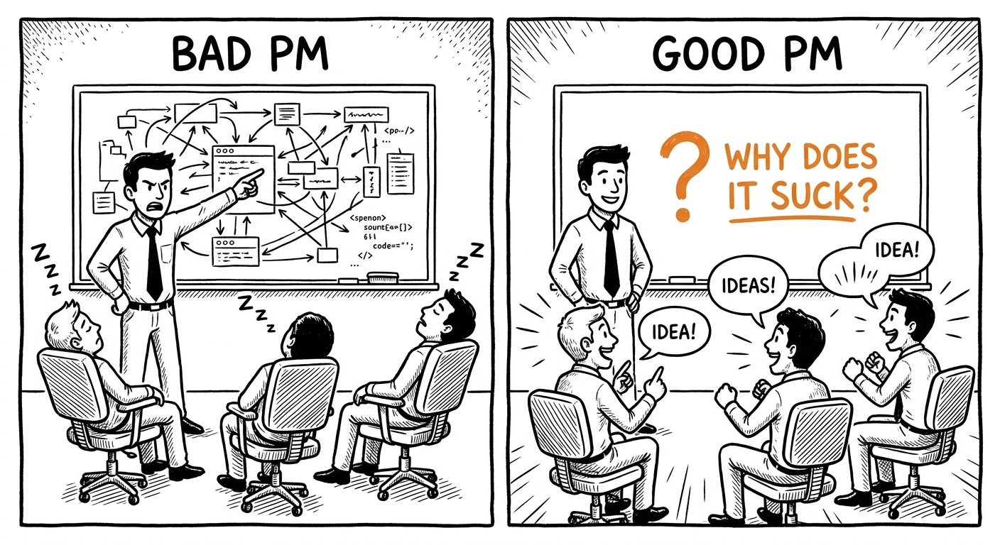
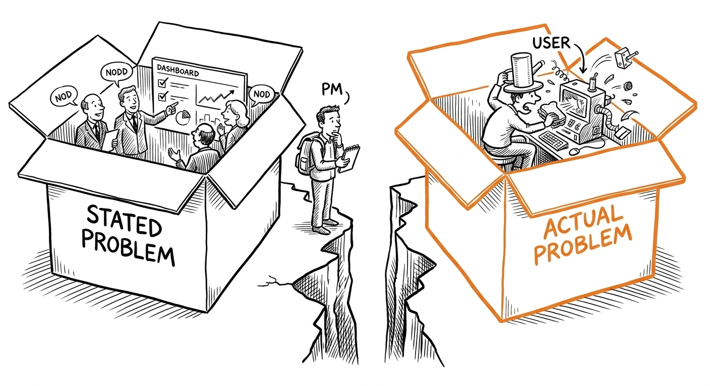
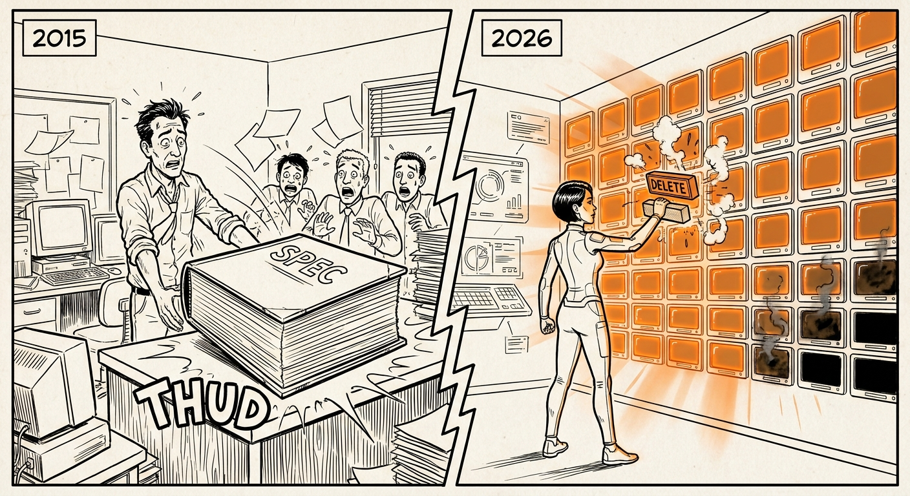
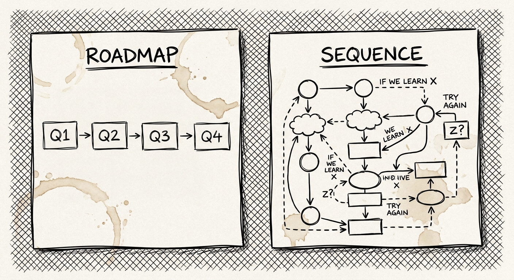
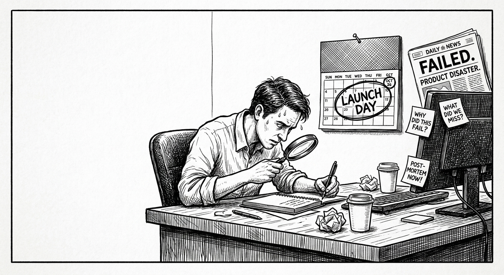
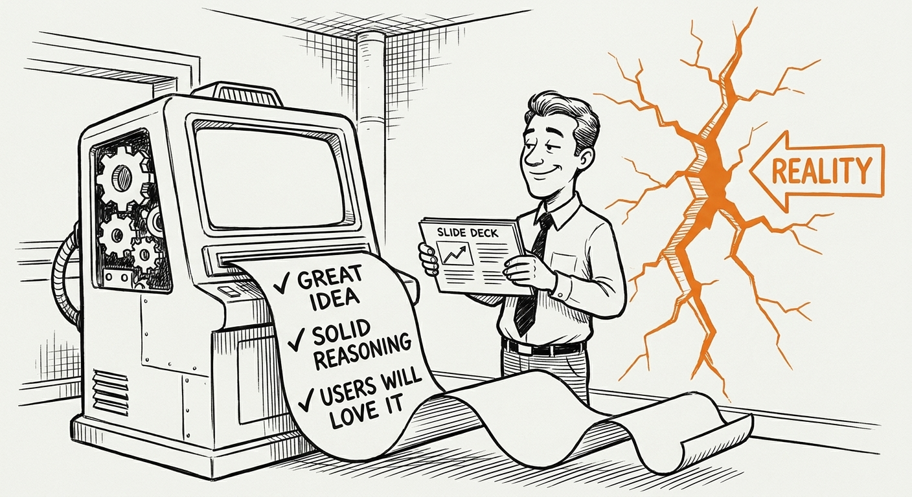
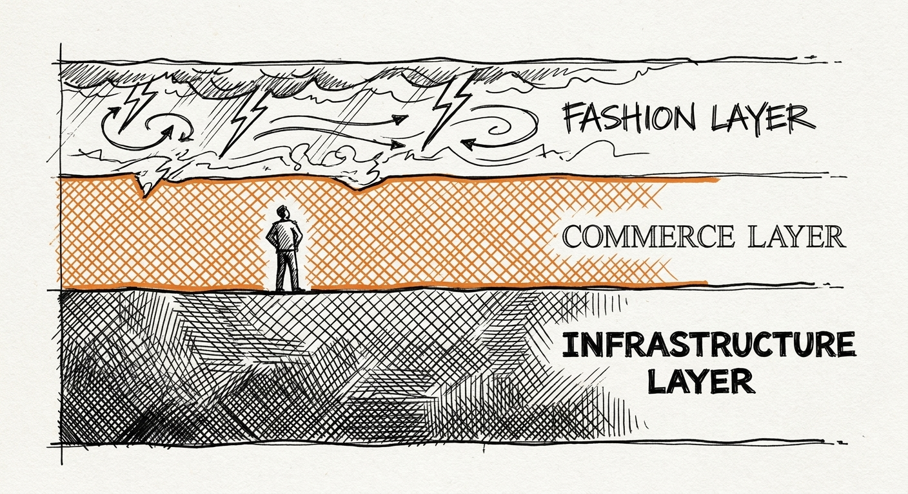

Capítulo 3. Cómo piensan los PMs
Los ingenieros piensan en sistemas. Los diseñadores piensan en usuarios. Los PMs piensan en trade-offs. Esa es la versión corta. La versión larga es que los PMs piensan en trade-offs a través de múltiples horizontes de tiempo, con información incompleta, bajo presión política, mientras administran las expectativas de gente con prioridades en competencia y visibilidad apenas parcial de lo que tú sabes.
El capítulo 2 fue sobre lo que traes al trabajo — las disposiciones, las orientaciones, las tolerancias. Este capítulo es sobre cómo esas disposiciones se vuelven operativas. Los movimientos mentales específicos. Las maneras de estructurar una decisión en el momento que distinguen a un PM que piensa con claridad de un PM que manotea.
Quiero ser honesto sobre algo antes de empezar: estos movimientos mentales no son una metodología. No existe un framework de pensamiento-PM que puedas instalar y correr. Los movimientos descritos en este capítulo son hábitos de pensamiento que toman años en desarrollarse y que se manifiestan distinto en contextos distintos y personas distintas. Lo que te doy es un vocabulario para patrones que tendrás que desarrollar con la práctica. El vocabulario es útil. No lo confundas con la cosa en sí.
La IA abarató la generación de opciones. Volvió más difícil elegir — ahora eliges de una lista más grande, con menos tiempo para evaluar, mientras la IA argumenta con confianza a favor de la dirección hacia la que ya te inclinabas.
Las habilidades de juicio que definen el trabajo de PM siempre estuvieron ahí. Solo que ahora son más visibles. Antes había una fricción que forzaba a pensar con cuidado: tenías que hacer el análisis tú mismo, construir tu caso con herramientas limitadas, sentarte con la incertidumbre sin nada que consultar. Esa fricción desapareció. Lo que queda es el pensamiento en sí.
3.1 Primero el problema, no la solución
Mal PM: «Deberíamos agregar un asistente de IA».
PM: «Los tickets de soporte sobre onboarding subieron 30% mes contra mes. La mitad son "¿por dónde empiezo?". ¿Qué es lo más chico que podemos probar para ver si una mejor guía corta eso a la mitad?».

Este principio — primero el problema, no la solución — ha sido un mantra de PM durante veinte años. Nunca ha sido más difícil de seguir que ahora.
La razón por la que nunca ha sido más difícil: en 2026, la solución suele llegar antes de que el problema haya sido diagnosticado como corresponde, y llega preempaquetada con capacidades que la hacen sentir inevitable. Todos en tu equipo han estado usando herramientas de IA. Han visto lo que pueden hacer. La idea del asistente de IA entra a la sala ya medio formada — alguien la mockeó, o vio a un competidor lanzarla, o leyó sobre ella, o armó un prototipo el fin de semana. La idea es concreta y el problema es abstracto. Lo concreto le gana a lo abstracto en las reuniones. La solución gana antes de que el problema tenga una audiencia justa.
Esta es la presión estructural contra la que operas. No es que tu equipo sea flojo ni que no entienda los fundamentos de PM. Es que el entorno de desarrollo de producto de 2026 genera soluciones atractivas a un ritmo que supera el descubrimiento de los problemas que se supone que resuelven. Se construyen funcionalidades en respuesta a lo que es posible, no a lo que se necesita. Este es el modo de falla central del momento de los productos de IA, y produce productos impresionantes, pulidos y técnicamente sofisticados que no se ganan la adopción ni la retención porque resolvieron un problema que nadie tenía.
Cómo se ve «primero el problema» cuando la solución es una funcionalidad de IA que todos quieren construir
Déjame recorrer cómo se ve esta disciplina en un escenario real de 2026, porque la versión genérica de «escribe el planteamiento del problema antes de pensar en la solución» siempre ha sido cierta y está siendo ignorada de manera integral.
Tu equipo quiere integrar un asistente de escritura con IA a tu producto. El producto es una herramienta de gestión de proyectos usada por agencias creativas chicas. El razonamiento del equipo: todo el mundo usa herramientas de escritura con IA por separado. ¿Por qué no integrarla? Los usuarios pueden promptear a la IA en contexto. Reduce el cambio de contexto. Es una funcionalidad de piso competitivo.
Pausa aquí. Antes de escribir un solo requisito, antes de mirar la implementación de un solo competidor, antes de preguntarle a ingeniería cuánto tomaría — ¿cuál es el problema?
No «los usuarios no tienen IA en nuestro producto». Eso no es un problema. Es la ausencia de una funcionalidad. ¿Cuál es el problema real que el asistente de escritura con IA resolvería?
Quizá es: «Los usuarios pasan un tiempo considerable escribiendo actualizaciones de estado y descripciones de proyecto que siguen formatos predecibles, y eso les reduce el tiempo para el trabajo que de verdad les importa». Eso es un problema. Es específico, es sobre un dolor del usuario y tiene una consecuencia medible.
O quizá el problema es: «Los usuarios pierden contexto al cambiar entre nuestra herramienta y sus herramientas de escritura con IA, lo que genera errores en la documentación de los proyectos». También es un problema. Un problema distinto. Con implicaciones de solución distintas.
O quizá — y esta es la incómoda — el problema es que tu product manager y el lead de ingeniería usan herramientas de escritura con IA en lo personal, les parecieron valiosas, y el equipo está proyectando su propia experiencia sobre una base de usuarios que usa tu producto con un flujo de trabajo fundamentalmente distinto. En cuyo caso puede que no haya ningún problema bien definido. Las ganas de construir la funcionalidad son el problema, no una necesidad del usuario.
No puedes saber cuál de estas es cierta sin hablar con usuarios. No encuestarlos. Hablar con ellos. Verlos trabajar. Averiguar qué hacen realmente con la escritura en el contexto de la gestión de proyectos y dónde está realmente la fricción.
Esta es la prueba que uso: la llamo la regla de las dos frases. Enuncia el problema en el que trabajas — no la solución, no el enfoque, no la funcionalidad — en dos frases. La primera nombra al usuario y el dolor específico. La segunda nombra lo que ese dolor le cuesta.
Ejemplo de un mal planteamiento: «Los usuarios necesitan asistencia de escritura con IA en su flujo de gestión de proyectos». Esto no es un planteamiento de problema. Es una solución vestida de problema. No hay dolor específico ni costo.
Ejemplo de un planteamiento mejor: «Los gerentes de proyectos creativos en agencias chicas pasan aproximadamente tres horas por semana escribiendo actualizaciones de estado y notas de reunión que contienen información altamente predecible. Ese tiempo sale de sus horas facturables, lo que afecta directamente los márgenes de su agencia».
Ahora tienes un problema. Puedes probar si es real (habla con diez agencias, averigua si la cifra de tres horas es precisa y si sale del tiempo facturable). Puedes dimensionarlo (¿cuántas agencias?, ¿cuál es el impacto en el margen?, ¿es de verdad un punto de dolor o solo una ineficiencia que ya aceptaron?). Puedes pensar si un asistente de escritura con IA es realmente la solución correcta para este problema específico, o si hay una solución más simple — mejores plantillas, mejores valores por defecto, autollenado desde datos estructurados — que atienda el mismo dolor de manera más directa.
La disciplina es esta: escribe primero el planteamiento del problema, y exige que pase la prueba de las dos frases, antes de dejar que el equipo discuta soluciones. Es simple y profundamente incómodo. Simple porque es un ejercicio de escritura, no un reto técnico. Incómodo porque obliga al equipo a sentarse en la incertidumbre de si existe un problema real que resolver, que es una sensación peor que construir algo.
La versión 2026 de este problema: cuando la IA hace que todo parezca un problema que vale la pena resolver
Hay un efecto de segundo orden que vale la pena nombrar. La IA no solo genera soluciones. También genera planteamientos de problema que suenan plausibles, personas de usuario y análisis de mercado que se pueden producir rápido y que se ven convincentes sin estar anclados en observación real.
He visto a PMs producir planteamientos de problema exhaustivos — con citas de usuarios, dimensionamiento de mercado, contexto competitivo — generados por IA con contacto mínimo con usuarios. Los documentos parecen investigación. No lo son. Son extrapolaciones plausibles de patrones en los datos de entrenamiento, moldeadas por el encuadre que el PM trajo al prompt. Las citas de usuarios son composiciones. El dimensionamiento de mercado sale de una fuente secundaria con metodología desconocida. El contexto competitivo es preciso a la fecha del último entrenamiento del modelo.
Esta es una versión del problema de adulación que describí en la sección de juicio: la IA valida cualquier planteamiento de problema que le traigas. Puedes generar un caso convincente de por qué el asistente de escritura con IA atiende un dolor crítico de usuario en un mercado desatendido en unos cuarenta minutos. Que sea cierto exige hablar con usuarios reales y estar dispuesto a escuchar una respuesta que no confirme tu hipótesis.
La protección contra esto: trata los artefactos de investigación generados por IA como hipótesis, no como hallazgos. Un documento de persona producido con asistencia de IA es un punto de partida para la investigación, no un sustituto de ella. Úsalo para afilar las preguntas que les llevarás a los usuarios, no para responderlas.
Primero el problema, según el contexto
Startup. En una startup, el problema es fácil de identificar y fácil de identificar mal, al mismo tiempo. Los clientes están cerca. Te van a decir qué quieren. No te van a decir qué necesitan, y las dos cosas suelen ser distintas. Las startups tempranas frecuentemente resuelven el problema que los clientes describen en lugar del problema que los clientes tienen — porque el problema descrito es verbal, explícito y está disponible en tus llamadas de ventas, mientras que el problema real exige observación e inferencia. La disciplina en una startup es el ritual semanal: ¿qué aprendimos esta semana del comportamiento real de los usuarios (no de sus preferencias declaradas), y cambia eso el planteamiento del problema?
Scale-up. En una scale-up ya hay muchos problemas, todos legítimamente reales, todos respaldados por alguna combinación de datos y evidencia de clientes, todos compitiendo por trimestres finitos de capacidad de ingeniería. «Primero el problema» se convierte en «cuál problema primero» — y la respuesta no es el que tu cliente más grande pidió más fuerte, ni el que aparece en más tickets de soporte. Esas son señales, pero no son la respuesta. La respuesta es el problema cuya solución se compone: aquel que al resolverlo destraba otros problemas, crea una plataforma para soluciones futuras o quita una restricción que hoy limita varios recorridos de usuario. En Udacity, la métrica que la empresa seguía era la finalización de programas — nanodegrees completos, de inicio a fin. Eso era legible para los fundadores académicos, para la prensa y para ventas enterprise. Pero oscurecía lo que una gran parte de los estudiantes estaba haciendo en realidad: inscribirse por habilidades específicas, proyectos específicos, módulos específicos — no por credenciales. Cuando mi equipo construyó la oferta Enterprise para organizaciones como AT&T, Turkcell y Mazda, encontramos que sus empleados necesitaban desarrollo de habilidades dirigido a roles específicos, no títulos. El problema real no era la calidad de los cursos. Era un desajuste de métrica: la empresa había definido el éxito alrededor de un evento de finalización que muchos estudiantes no estaban persiguiendo. Esa lectura desafiaba los supuestos sobre los que los PMs de consumo, marketing y la alta dirección habían construido sus estrategias — e hizo aflorar fricciones aguas abajo que la métrica venía ocultando, como becas y redes de egresados condicionadas por completo a terminar el nanodegree, volviendo invisibles ante los empleadores a los estudiantes parciales. Encontrar ese problema exige pensar con claridad sobre el sistema, no solo responder a la señal más ruidosa.
Megacorporación. En una organización grande, el problema muchas veces ya lo definió alguien arriba de ti, en un OKR que se escribió para sobrevivir un proceso de planeación, no para describir la realidad. «Primero el problema» a esta escala significa tener el valor de decir: «Este es el problema declarado, esto es lo que creo que es el problema real, y por esto importa la brecha». No es cómodo. Parece una crítica al proceso de planeación. Puede implicar que el OKR estaba mal. La mayoría de los PMs en organizaciones grandes aprendió a no hacer esto, y por eso las organizaciones grandes construyen muchas cosas que atienden el problema declarado mientras el problema real sigue sin resolverse. El PM que sí lo hace — que nombra la brecha entre el problema declarado y el real con evidencia, no con queja — está haciendo el trabajo más difícil y más valioso disponible en esa etapa.

3.2 Palanca sobre producción
Lanzar no es la meta. Lanzar cosas que se componen sí lo es.
Esta distinción no es nueva. Pero la manera en que se juega cambió significativamente en 2026, y el modo de falla cambió con ella.
El viejo modo de falla de los PMs orientados a la producción: lanzabas muchas funcionalidades, el producto se volvía complejo, los usuarios se confundían, y la velocidad que parecía progreso en realidad acumulaba deuda técnica y de UX que te frenaba después. El PM que lanzaba mucho se veía bien trimestre a trimestre y creaba problemas en el horizonte anual.
El nuevo modo de falla es distinto. Como la IA volvió más rápidos los prototipos, los primeros borradores y las implementaciones iniciales, el volumen de cosas que podrían lanzarse aumentó dramáticamente. Un equipo de cinco ingenieros en 2026 puede generar prototipos viables a un ritmo que un equipo de quince no podía en 2021. Esto significa que la pregunta de palanca ya no es principalmente si estás escribiendo specs lo bastante buenas para que cinco ingenieros construyan lo correcto. Es cuáles de las cincuenta cosas viables que podrías construir valen la pena, y cuáles cuarenta y seis deberías tirar antes de que se conviertan en algo.
Palanca 2015: Escribe una spec para que cinco ingenieros construyan lo correcto en vez de construir lo incorrecto o nada.
Palanca 2026: Decide cuáles tres experimentos, de los veinticinco que tu equipo podría construir en una semana, vale la pena correr — y después mata los resultados de dos de ellos antes de que se conviertan en compromisos de roadmap.

Tu trabajo subió un nivel de abstracción. Ya no gestionas principalmente la ejecución. Decides qué experimentos vale la pena correr, sobre qué resultados vale la pena construir y qué cosas de aspecto prometedor hay que matar antes de que consuman atención y espacios de planeación que deberían ir a algo mejor. El modelo puede generar experimentos más rápido de lo que tú puedes pensarlos. Tu ventaja es saber cuáles experimentos responden una pregunta que vale la pena hacer.
Cómo se ve la palanca en la práctica
En Meta, gestionando el crecimiento de ads a escala, la pregunta de palanca siempre era qué construir versus qué dejar que el sistema optimice. Una plataforma de ads a gran escala tiene cientos de variables ajustables — estrategias de puja, optimización de creativos, parámetros de segmentación de audiencias, algoritmos de entrega. El PM que piensa en producción pregunta: ¿qué funcionalidad nueva podemos lanzar este trimestre? El PM que piensa en palanca pregunta: ¿cuál es el único cambio — en la señal de la subasta, en la función objetivo, en el incentivo de puja — que, si lo acertamos, mueve cómo pujan los anunciantes, cómo interactúan los usuarios y cómo la plataforma equilibra oferta y demanda, mejorando los resultados de ambos lados sin requerir una funcionalidad nueva por cada mejora?
Es una pregunta fundamentalmente distinta. Exige entender el sistema con la profundidad suficiente para identificar el punto de palanca — el lugar donde un cambio crea retroalimentación positiva en vez de solo agregar una capacidad nueva en aislamiento. Encontrar esos puntos de palanca es trabajo lento. Exige entender tu modelo de datos, el comportamiento de tus usuarios, tu arquitectura técnica y tus incentivos organizacionales al mismo tiempo. No hay atajo. Pero el premio por acertar es asimétricamente mejor que el premio por acertar diez cosas más chicas.
La prueba de si trabajas en palanca o en producción: si tu equipo se duplicara mañana, ¿lanzarías el doble de producto útil? Si sí, estás gestionando producción — el cuello de botella es la capacidad, y la capacidad escala con la gente. Si no — si el cuello de botella son las decisiones, la claridad o la calidad de tus apuestas — puede que estés trabajando en palanca. La palanca no escala con la gente, porque la restricción no es la capacidad de ejecución. Es la calidad de las preguntas que haces y de las elecciones que tomas.
Palanca e IA: el nuevo problema de multiplicación
La IA multiplicó la palanca de las buenas decisiones y el daño de las malas. Esta es la parte que la mayoría de lo que se escribe sobre PMs e IA pasa por alto.
Cuando un PM toma una buena decisión estratégica — identifica el problema correcto, secuencia las apuestas correctas, construye en la dirección correcta — la ejecución asistida por IA hace que esa buena decisión se componga más rápido. El equipo lanza más rápido, aprende más rápido, itera más rápido. La composición juega a tu favor.
Cuando un PM toma una mala decisión estratégica — identifica el problema equivocado, construye en la dirección equivocada, optimiza la métrica equivocada — la ejecución asistida por IA hace que esa mala decisión también se componga más rápido. Construyes mucho de lo equivocado muy rápido. La deuda técnica se acumula más rápido. Los usuarios a los que fallaste sienten la falla con más agudeza porque el producto se movió velozmente hacia un lugar que no les sirve. Desperdiciaste más tiempo y creaste más desorientación en el mismo periodo.
La implicación: pensar en palanca nunca fue tan importante, porque las apuestas de las decisiones de palanca subieron en ambas direcciones. El PM que optimiza para lo correcto en 2026 es dramáticamente más efectivo que el que optimizaba para lo correcto en 2016. El PM que optimiza para lo equivocado es dramáticamente más destructivo.
La palanca según el contexto
Startup. La palanca se ve como matar cosas. Puedes generar más ideas, prototipos y construcciones tempranas de las que puedes evaluar como corresponde. Cada prototipo que se construye consume recursos — tiempo de ingeniería, atención, espacio de planeación — que podrían ir a algo mejor. El PM que mata las malas ideas antes de que consuman tiempo de ingeniería está creando palanca. El PM que le dice que sí a todo porque «hay que probarlo» la está destruyendo. En una startup, la disciplina de decirle que no a cosas interesantes es la actividad primaria de palanca. Casi todo es interesante. Casi nada es lo correcto ahora mismo. Aprender a distinguirlo y actuar en consecuencia es el trabajo.
Scale-up. La palanca se ve como infraestructura — las cosas que hacen el trabajo futuro más rápido y mejor, en lugar de solo completar el trabajo actual. El framework de priorización que tu equipo usa sin preguntarte. El dashboard de métricas que responde la pregunta recurrente sin una extracción semanal de datos. La plantilla de documentación que le quita las primeras dos horas a cada ciclo de planeación. Los estándares que otros equipos adoptan porque funcionaron. Esas son inversiones de palanca. Se componen de maneras en que el trabajo de funcionalidades no. El PM que construye infraestructura para el equipo suele ser menos visible que el que lanza funcionalidades — su trabajo no aparece en los anuncios de lanzamiento — pero crea más valor con el tiempo.
Megacorporación. La palanca se ve como influencia. Las relaciones que te permiten convertir una revisión de seis semanas en una conversación de treinta minutos con la persona correcta. La inversión de plataforma sobre la que cinco equipos pueden construir en lugar de construir cinco sistemas paralelos. El estándar que estableces y que otros equipos adoptan voluntariamente porque es mejor que lo que tenían. El PM de megacorporación que entiende dónde están los puntos de palanca organizacionales — qué decisiones, relaciones e inversiones crean influencia asimétrica — puede tener un impacto que se ve desproporcionado a su autoridad formal. Los que no entienden la palanca a esa escala producen buen trabajo sin resonancia organizacional.
3.3 Secuenciar es la estrategia
Los roadmaps son mentiras. Las secuencias son la verdad.
Esto necesita desempacarse, porque la afirmación suena más provocadora de lo que es. Los roadmaps no son mentiras por ser imprecisos sobre qué se va a lanzar. Son mentiras porque implican una falsa precisión sobre el futuro: que sabes, con suficiente detalle como para meter las cosas en cajitas trimestrales, qué vas a estar construyendo y por qué dentro de tres o cuatro trimestres. No lo sabes. El mercado se habrá movido. Tus usuarios habrán hecho aflorar un problema que no habías visto. Un competidor habrá tomado una decisión que cambió el panorama estratégico. Una restricción técnica se habrá resuelto de una manera que cambia lo posible.
Lo que sí puedes saber — y lo que de verdad constituye la estrategia — es el orden del aprendizaje. ¿Qué apuestas necesitas validar primero, porque las apuestas posteriores dependen de ellas? ¿Qué supuestos cargan el mayor riesgo, y cómo secuencias tu trabajo para probarlos antes de comprometer recursos en las cosas que dependen de ellos?
Esta es la distinción entre un roadmap y una secuencia. Un roadmap dice: en el Q1 construimos autenticación, en el Q2 construimos compartir, en el Q3 construimos funcionalidades de IA. Una secuencia dice: la autenticación es precondición de compartir; pero deberíamos construir una versión mínima de compartir antes de diseñar la autenticación completa, porque todavía no sabemos si nuestros usuarios van a compartir de una manera con implicaciones de seguridad — y si no lo hacen, nuestros requisitos de autenticación se simplifican bastante. Si compartir se adopta más de lo que esperamos, aprendemos algo del flujo de trabajo de nuestros usuarios que cambia nuestra lectura de si la funcionalidad de IA del Q3 resuelve el problema correcto. La secuencia no es un cronograma. Es un orden de aprendizaje.
La IA puede generar «Q1: Autenticación. Q2: Compartir. Q3: Funcionalidades de IA». No puede decirte que si Autenticación se atrasa, Compartir no vale nada, pero que si Compartir sale temprano aprendes si la funcionalidad de IA siquiera hace falta — o si a los usuarios les importa compartir en absoluto.

Decisiones de secuenciación en 2026: el ejemplo de la funcionalidad de IA
Aquí va un escenario que se está jugando en empresas de toda la industria ahora mismo, en 2026, y que ilustra por qué secuenciar es la estrategia.
Tu equipo de producto quiere lanzar una funcionalidad con IA — digamos un motor de recomendaciones que le muestra contenido relevante a los usuarios. El equipo lleva dos trimestres discutiéndolo. Todos están de acuerdo en que sería valioso. La pregunta es: ¿lo construyes ahora, o algo más tiene que venir primero?
El análisis de secuenciación se ve así:
¿Qué necesita el motor de recomendaciones para funcionar? Necesita suficientes datos de comportamiento de usuarios para entrenarse, necesita la infraestructura para servir recomendaciones en tiempo real, necesita un bucle de retroalimentación para aprender de las respuestas de los usuarios a sus recomendaciones, y necesita una superficie de producto donde las recomendaciones se muestren y se usen.
Ahora pregunta: ¿tienes esas cosas? Si tus datos de comportamiento son delgados — tienes seis meses de datos de una base de usuarios que todavía está creciendo — la calidad de las recomendaciones será pobre en el lanzamiento y frustrará a los usuarios que se topen con ellas. Si el bucle de retroalimentación no está construido, el motor no va a mejorar. Si la superficie del producto no está diseñada para acomodar recomendaciones con naturalidad, la funcionalidad se va a sentir como un injerto.
La secuencia que parece obvia — construir la funcionalidad de IA porque todos acuerdan que es valiosa — puede estar exactamente al revés. La secuencia correcta podría ser: primero, invertir en instrumentación del comportamiento de usuarios para tener datos más ricos. Segundo, lanzar una versión más simple de la superficie de recomendaciones con curaduría manual, para aprender cómo responden los usuarios a las recomendaciones en este contexto antes de construir el motor de IA. Tercero, ya con calidad de datos y un bucle de retroalimentación diseñado, construir el motor de IA en una superficie que ya validaste.
Esta secuencia es más lenta. No produce un anuncio de «funcionalidad de IA» en el Q2. Pero produce una mejor funcionalidad de IA en el Q4, construida sobre datos que la hacen funcionar de verdad, en una superficie donde los usuarios ya demostraron querer recomendaciones.
El PM que secuencia bien construye este argumento con claridad y lo sostiene bajo presión. La presión será real. Hay razones competitivas para lanzar rápido. Hay incentivos organizacionales para tener una funcionalidad de IA que anunciar. El argumento de secuenciación exige decir: el camino más rápido no es el mejor camino, por estas razones específicas, y este es el orden de aprendizaje que hace que nuestra eventual funcionalidad de IA sea mejor que lo que lanzaríamos hoy.
Cómo pensar las dependencias de una secuencia
Hay dos tipos de dependencias en una secuencia, y confundirlas es un error común.
Las dependencias técnicas son estructurales — restringen lo que es físicamente posible construir, sin importar lo que sepas. En Superpedestrian, ninguna funcionalidad de firmware que tocara el controlador del motor podía salir antes de que el comportamiento base del controlador fuera estable. No era política. Era física. Una capa de firmware que se ejecuta sobre un chip necesita una base estable con la cual interactuar. No puedes probar de manera significativa un sistema cuyos cimientos todavía se están moviendo.
Las dependencias de aprendizaje son epistémicas — restringen lo que vale la pena construir, según lo que has descubierto o todavía no. En JUMP, pudimos haber construido incentivos de rebalanceo para los usuarios antes de entender la asimetría de demanda que estaba creando el problema de distribución. La infraestructura de GPS nos dejaba ver dónde terminaban las bicicletas. Lo que necesitábamos aprender primero era por qué. Las bicicletas se acumulaban en los nodos de transporte por la mañana porque la gente iba en ellas al tren, no por ninguna falla en la lógica de distribución. El arreglo real no era una estructura de incentivos. Era una revelación sobre la demanda. Una funcionalidad de rebalanceo técnicamente completa construida antes de esa revelación habría movido bicicletas en la dirección equivocada con gran confianza.
Esa brecha — construir antes de haber aprendido lo que necesitas saber para construir lo correcto — es de lo que realmente se tratan la mayoría de las fallas de secuenciación. La dependencia técnica es visible y legible. La dependencia de aprendizaje es invisible hasta que la violaste.
La prueba de la servilleta: dibuja tu roadmap. Tacha el 50%. ¿El 50% restante sigue teniendo sentido como plan? Si sí, tenías una secuencia — la lógica central se sostiene aunque las cosas se caigan. Si no — si el 50% restante es incoherente sin las partes que quitaste — tenías una lista disfrazada de roadmap. Las listas se desarman cuando la realidad no coopera. Las secuencias sobreviven.
La secuenciación según el contexto
Startup. Secuenciar es sobrevivir. El orden equivocado de apuestas puede quemar el runway en lo equivocado mientras el mercado se mueve. La secuencia correcta es casi siempre: ¿cuál es la prueba más barata del supuesto más riesgoso? Esto suena obvio y se viola rutinariamente. Los equipos secuencian según lo que más les emociona construir, lo que es técnicamente factible o lo que está mejor articulado — no según lo que es más riesgoso y más necesita probarse. En una startup, el supuesto más riesgoso es casi siempre sobre los usuarios: ¿tienen el problema que crees que tienen, y van a usar lo que estás construyendo para atenderlo? Ese supuesto se prueba primero, de la forma más barata. Todo lo demás espera.
Scale-up. La secuenciación ahora tiene peso organizacional. Los equipos se dotaron contra el roadmap. Las dependencias de plataforma se calendarizaron. Otros equipos esperan tus entregables. Los cambios de secuencia crean ondas — cambian los planes de otros equipos, lo que afecta sus metas trimestrales, lo que afecta las evaluaciones de desempeño de sus managers, lo que produce resistencia. La disciplina es saber qué cambios de secuencia valen la onda. Algunos sí — cuando aprendiste algo que cambia fundamentalmente lo que deberías estar construyendo, el costo de seguir en la dirección equivocada es más alto que el costo de causar disrupción organizacional. Otros no — cuando el cambio es una mejora marginal, no una reorientación de fondo. Aprender a distinguirlos es una llamada de juicio con consecuencias organizacionales reales.
Megacorporación. La secuenciación es política. Lo que se financia primero señala qué cree la organización que importa. El orden del roadmap no es solo un plan táctico — es una declaración de prioridad estratégica que será leída, interpretada y respondida por gente en toda la organización. Cambiar la secuencia después de que la planeación quedó cerrada exige cobertura ejecutiva o evidencia documentada de una apuesta saliendo mal. Ambas existen. Ninguna es gratis. El PM de megacorporación que quiere cambiar una secuencia necesita entender esto y construir el caso en consecuencia: no solo «esta es la mejor secuencia», sino «por esto la secuencia actual crea un riesgo específico y documentado que justifica el costo organizacional de cambiarla».
3.4 Convicción calibrada
Necesitas una postura. La IA va a validar cualquier postura que le des.
Esto es lo más peligroso de trabajar con LLMs en el trabajo de producto, y quiero detenerme aquí porque es menos obvio de lo que suena.
El problema no es que la IA te dé información incorrecta. La mayor parte de lo que te dice un buen LLM es cierto, o al menos defendible. El problema es que te da respaldo confiado, bien estructurado e internamente consistente para cualquier posición con la que llegues. Es una máquina de «sí, y además» extremadamente persuasiva. Puedes darle tu hipótesis como prompt y obtener tres páginas de evidencia de apoyo. Luego puedes llevar esa evidencia a una reunión y presentarla como investigación. La investigación no es falsa — los hechos individuales son reales. Pero la selección, el encuadre y el énfasis fueron moldeados por tu creencia previa, amplificada y pulida por un modelo que estaba optimizando para una respuesta coherente y útil, no para la verdad.
Antes de la IA, construir un caso analítico hermético para una decisión de producto exigía trabajo. Ese trabajo implicaba toparte con evidencia en contra. Entrevistabas usuarios planeando armar el caso de la funcionalidad A y uno te decía algo que complicaba tu hipótesis. Sacabas datos para apoyar tu posición y encontrabas una métrica que la contradecía. La fricción de la investigación era epistémicamente útil — te forzaba al contacto con la realidad, incluidas las partes incómodas.
Ahora puedes construir un caso convincente, citado y sofisticado para casi cualquier decisión de producto en cuarenta y cinco minutos. Puedes tener tu posición confirmada, ilustrada y narrativamente estructurada sin salir de tus creencias existentes. No es un cambio menor. Elimina el mecanismo por el cual la mayor parte del pensamiento de producto se corrige.
Qué significa la convicción calibrada y en qué se diferencia de la confianza
La convicción calibrada no es lo mismo que la confianza. La confianza es una sensación — una certeza sentida sobre una posición. La convicción calibrada es un estado epistémicamente estructurado: tienes una postura firme, puedes defenderla con evidencia específica y te has comprometido de antemano con la evidencia que te haría cambiar de opinión.
Esa última parte es el elemento crítico. De antemano. Antes de lanzar. Antes de empezar a enamorarte de los resultados. Antes de que el equipo haya comprado el enfoque. Antes de haber escrito el anuncio de lanzamiento en tu cabeza.
Comprometerse de antemano con la evidencia en contra es difícil exactamente de la misma manera en que son difíciles las otras cualidades de este libro: exige tomar una posición en público antes de saber si tienes razón. «Creemos que esta funcionalidad aumentará la tasa de activación al menos 15% en los primeros treinta días. Si no llega al 15%, nos equivocamos sobre el problema y lo vamos a revisar». Esa declaración asume un compromiso profesionalmente riesgoso. Si te equivocas, se ve. La mayoría de los PMs aprende, bastante rápido, a evitar los precompromisos explícitos en favor de un lenguaje tipo «esperamos que esto mejore la activación» — lenguaje que suena a convicción pero no crea rendición de cuentas.
La convicción calibrada exige resistir ese impulso suavizador. No porque la rendición de cuentas sea cómoda, sino porque la alternativa — lanzar preferencias disfrazadas de experimentos — no produce aprendizaje. No puedes actualizar tu modelo del mundo si nunca especificas qué evidencia lo actualizaría.
El pre-mortem como herramienta de calibración

El pre-mortem es la mejor herramienta práctica que conozco para la convicción calibrada. Funciona así: antes de tomar una decisión de producto significativa, imagina que pasaron seis meses y la decisión resultó equivocada. Muy equivocada. Escribe cómo pasó. No «lo lanzamos y no funcionó» — sé específico. ¿Qué hicieron los usuarios? ¿Qué no hicieron? ¿Qué métrica se movió en la dirección equivocada? ¿Qué mostraron los datos que habrías visto antes si hubieras estado mirando?
He usado pre-mortems de manera consistente desde que llevaba productos en la plataforma de comercio de Google, donde una mala decisión a escala afectaba a millones de comerciantes. El ejercicio no evita las malas decisiones. Nada evita las malas decisiones. Lo que hace es sacar a la superficie los modos de falla que conoces pero no has querido examinar — los supuestos que sabes frágiles pero no has nombrado, porque nombrarlos complicaría el caso de la cosa que quieres hacer.
En Google construíamos funcionalidades para comerciantes chicos que intentaban administrar su catálogo de productos a escala. Había presión por lanzar cierta funcionalidad de automatización que simplificaría la gestión del catálogo. El caso a favor era fuerte: dolor de usuario claro, implementación técnica limpia, brecha competitiva de funcionalidad. El pre-mortem que corrí hizo aflorar esto: los comerciantes que más se beneficiarían de la automatización eran los de mayor complejidad de catálogo, y los de mayor complejidad de catálogo eran también los más sensibles a los errores — una acción automatizada que producía resultados incorrectos para mil productos a la vez era dramáticamente peor que el mismo error hecho a mano en un producto. Si la automatización tenía una tasa de error de apenas 1%, sería catastrófica para los comerciantes con más probabilidades de usarla, y esos eran los comerciantes que más necesitábamos que tuvieran éxito.
Esa preocupación estaba en la sala antes del pre-mortem. Solo que no se había nombrado. El pre-mortem creó una estructura para nombrarla y tomarla en serio, en vez de asentir y seguir adelante.
La convicción calibrada y el problema de confirmación de la IA en 2026

El problema de confirmación de la IA hace más importantes los pre-mortems, no menos. Como puedes construir un caso de apoyo tan rápido, la disciplina mental de imaginar explícitamente el fracaso tiene que trabajar más duro. El pre-mortem mismo puede asistirse con IA — puedes pedirle a un modelo que genere escenarios de fracaso para tu decisión de producto, y producirá una lista de escenarios plausibles. Esto es realmente útil. El modelo puede generar modos de falla que no se te ocurrieron.
Pero hay un modo de falla específico en los pre-mortems asistidos por IA: por defecto, el modelo tiende a generar modos de falla lógicamente asociados a la decisión, no modos de falla políticamente difíciles de nombrar. Te dirá que la funcionalidad podría tener poca adopción, o que podría crear deuda técnica, o que el cronograma podría deslizarse. El modo de falla que involucra el apego personal de tu CEO a la funcionalidad, que la vuelve imposible de matar incluso cuando está fallando — ese tiende a no aflorar salvo que lo hayas prompteado específicamente, de maneras que se sienten incómodas de escribir.
La excepción son las empresas que construyeron culturas fuertes de transparencia interna — equipos que escriben en público, registran decisiones y debates, y asientan la perspectiva ejecutiva en registros internos minables. En esas empresas, las herramientas de IA aplicadas a ese corpus pueden producir una calibración organizacional anclada en la voz real de quienes tienen la autoridad de decisión, de maneras que rivalizan con lo que obtendrías solo por conversaciones. La inteligencia organizacional que una empresa como Meta genera con su cultura de escritura interna — registro constante de decisiones, ejecutivos dejando su postura asentada en foros, debates comprometidos a texto buscable — crea un tipo de memoria institucional que de verdad se puede consultar con rigor. La brecha relevante en esas empresas no es «¿el contexto político está disponible para el modelo?» — es «¿el contexto relevante ya quedó por escrito?». Siempre hay huecos: la conversación que no se registró, la perspectiva más reciente que todavía no está asentada. Pero el grado de calibración organizacional disponible a través de corpus internos bien mantenidos en empresas transparentes rivaliza con lo alcanzable en empresas como Google, donde los silos son estructurales — los directores suelen estar en pugna precisamente porque el contexto no se comparte entre organizaciones, una dinámica que parece intencional por diseño más que deriva accidental. En organizaciones con silos, donde la inteligencia relevante vive en relaciones y conversaciones de pasillo y no en registros, la brecha es tan grande que ninguna cantidad de prompting la cierra.
La convicción calibrada en 2026: usa la IA para generar los modos de falla lógicos. Para los modos de falla organizacionales y políticos, el método correcto depende de qué haya asentado tu empresa por escrito. En organizaciones que construyen con transparencia — donde las decisiones, los debates y la perspectiva ejecutiva están en el registro y son minables — la IA aplicada a esos registros puede aportar una calibración organizacional significativa. En empresas más aisladas en silos, haz ese análisis tú mismo, conversando con la gente que conoce el contexto. En cualquier caso: sé específico sobre qué evidencia vas a estar buscando. Escríbela antes de lanzar. Revísala después.
Cómo la convicción tiene que sobrevivir en distintos entornos
Startup. En una startup, la convicción es un mecanismo de supervivencia. Nadie te va a seguir hacia la incertidumbre si no proyectas confianza. Pero la convicción sin calibrar mata startups. Los founders y PMs que sobreviven la etapa temprana son los que sostienen la convicción con la soltura suficiente para actualizarla cuando llegan los datos, y con la firmeza suficiente para que el equipo no pierda la fe en cada revisión semanal. Suena paradójico. En la práctica se ve así: proyectar confianza en la dirección mientras mantienes curiosidad genuina sobre si las apuestas específicas son correctas. «Estamos construyendo lo correcto para los usuarios correctos, y todavía no estoy seguro de que este enfoque particular sea el adecuado — esto es lo que estamos observando». Eso no es debilidad. Es honestidad intelectual en registro de liderazgo.
Scale-up. En una scale-up ya tienes suficientes datos para equivocarte con confianza. Los modelos pueden racionalizar. Los dashboards pueden leerse selectivamente. Los análisis de cohortes pueden rebanarse de maneras que apoyen cualquier conclusión. Este es el momento más peligroso para la convicción calibrada — cuando tienes herramientas analíticas sofisticadas, un equipo que ya compró una dirección y un proceso de planeación que comprometió recursos. La disciplina es correr los pre-mortems antes de construir el caso, no después. El caso será convincente una vez que lo construyas. La pregunta es si el caso es correcto.
Megacorporación. En una organización grande, la convicción tiene que sobrevivir una burocracia diseñada para lijarla. Revisión legal, revisión de políticas, revisión ejecutiva, revisión regional, revisión de socios. Para cuando algo se lanza, la intuición original puede quedar irreconocible. La disciplina tiene dos partes: primero, escribe qué crees y por qué antes de que el proceso empiece. Segundo, en cada etapa de revisión, distingue entre los cambios que actualizan la sustancia de la decisión (valiosos, incorpóralos) y los que diluyen u oscurecen la decisión sin mejorarla (resístelos, con evidencia). El PM que puede mantener el hilo de una posición clara a través de un proceso de aprobación complejo, incorporando mejoras genuinas mientras defiende el núcleo, hace un tipo de trabajo específico y difícil que la mayoría de la formación de PM ignora. En empresas con culturas fuertes de escritura interna, ese hilo lo protege el registro mismo — la posición original está en el archivo y puede compararse con lo que salió del otro lado de la revisión. En empresas más aisladas, el PM tiene que mantenerlo a mano, porque nadie más lo hará y no hay registro que lo haga aflorar.
3.5 Sostener la mirada larga
Esta no tiene un aforismo limpio. Es menos un movimiento mental que una orientación que subyace a todos los demás.
El trabajo de PM está sistemáticamente sesgado hacia lo inmediato. Ciclos de sprint, revisiones trimestrales, anuncios de lanzamiento, standups semanales — el tempo del desarrollo de producto crea un entorno donde el corto plazo es constantemente visible y el largo plazo vive perpetuamente interrumpido por él. La reunión que tienes mañana es sobre lo que sale el próximo sprint. La métrica que miras es la tasa de activación de esta semana. El feedback que lees es de usuarios que usaron la funcionalidad que lanzaste el mes pasado.
Esto no es una falla del diseño de procesos. Es una respuesta racional a la realidad — el corto plazo es donde está la palanca en la escala de tiempo corta, y exige atención. El problema es que los PMs completamente absorbidos por el corto plazo pierden la mirada larga, y sin la mirada larga, las decisiones de corto plazo no se componen. Tomas decisiones individualmente razonables que no suman una dirección coherente.
Sostener la mirada larga es la práctica de mantener claridad sobre hacia dónde intentas ir en un horizonte de uno a tres años mientras tomas decisiones en un ciclo semanal. Exige que puedas responder, en cualquier momento, preguntas como: ¿cuál es el estado de este producto en dos años si la trayectoria actual se sostiene? ¿Es un buen estado? Si no, ¿cuál es la decisión que necesitas tomar el próximo trimestre para redirigir la trayectoria? ¿Qué estás optimizando ahora que será difícil de des-optimizar después?
La mirada larga y la IA en 2026

Enseñando en Singularity University en 2012, pasé tiempo con Stewart Brand y Paul Saffo — dos de los pensadores de largo plazo más rigurosos trabajando en futuros tecnológicos. Un marco que desarrolló Brand, el pace layering (las capas de ritmo), ofrece el lente más útil que he encontrado para navegar el desafío específico que la IA le crea a los equipos de producto que intentan sostener una mirada larga.
El pace layering describe cómo distintos sistemas cambian a velocidades radicalmente distintas. En la capa más rápida: la moda y el arte. Debajo: el comercio. Debajo: la infraestructura. Luego la gobernanza, la cultura y la naturaleza — la capa más lenta de todas. La observación clave de Brand es que las capas rápidas innovan y experimentan; las lentas estabilizan y restringen. La interacción entre ellas es lo que permite que los sistemas complejos sean a la vez adaptativos y duraderos.
Aplicado a la IA en 2026: las capacidades de los modelos de frontera — qué modelos lideran los benchmarks este trimestre, qué patrones agénticos se sienten novedosos hoy — operan en la capa de la moda. Van a cambiar. Las aplicaciones comerciales que la IA habilita — flujos de trabajo potenciados con IA por los que los clientes pagan, funcionalidades que entregan valor medible para trabajos específicos por hacer — se están consolidando en la capa del comercio. Y debajo, la IA de capa de infraestructura — procesamiento de texto confiable, clasificación, embeddings, APIs commodity — ya es lo bastante estable como para construir sobre ella sin miedo a la obsolescencia.
El desafío de mirada larga para un equipo de producto no es «¿nuestras capacidades de IA quedarán obsoletas?». En la capa de la moda, sí. La pregunta es: ¿sobre cuál capa estás construyendo en realidad? Una funcionalidad fuertemente acoplada al output actual de un modelo específico es una apuesta de capa de moda — va a requerir reconstrucción conforme esa capa evolucione. Un producto posicionado alrededor de un problema de usuario que la IA ayuda a resolver con más eficacia opera más cerca de la capa del comercio — más duradero, porque el problema persiste aunque la implementación cambie por debajo. Un producto que trata la IA como infraestructura — como una capa de capacidad confiable y en mejora, no como una funcionalidad — es la posición más duradera de todas.
La contribución de Paul Saffo a esto: mapea el cono de incertidumbre en lugar de elegir un solo punto de predicción. Los buenos pronosticadores definen rangos. Cuando tomas decisiones de producto de mirada larga con capacidades de IA en la mezcla, la pregunta no es «¿qué podrá hacer la IA en dos años?». Eso genera una predicción de punto único que estará equivocada en ambas direcciones a la vez — subestimando algunas capacidades, sobreestimando otras. La mejor pregunta es: ¿sobre qué capa estoy construyendo, y cuál es el horizonte de planeación apropiado para esa capa? Las apuestas de capa de moda ameritan horizontes cortos y reconstrucciones frecuentes. Las apuestas de capa de infraestructura ameritan horizontes más largos y una inversión más deliberada.
El tipo de pensamiento de largo plazo que sobrevive un entorno tecnológico que cambia rápido no es «en dos años tendremos la funcionalidad X con la capacidad Y». Ese nivel de especificidad estará equivocado. El que sobrevive es: «en dos años, la relación de nuestros usuarios con [el trabajo central por hacer] se verá así — en la capa del comercio, de forma duradera — y nuestro producto necesita estar posicionado aquí para servirla». En Meta, trabajando en el crecimiento de ads, la pregunta de mirada larga nunca fue «qué capacidades de IA estarán en nuestros productos de ads». Era «cómo se verá la relación entre los anunciantes y sus audiencias en un mundo donde la IA media más de la interacción, y qué significa eso para dónde se crea el valor». Esa pregunta se sostuvo aun cuando las respuestas tecnológicas específicas cambiaban. Era pensamiento de capa de comercio sostenido contra un entorno de capa de moda.
Sostener la mirada larga según el contexto
Startup. La mirada larga en una startup es la visión. Es por qué existes, cómo se ve el mundo si tienes éxito, por qué ese mundo vale la pena construirse. Tiene que ser lo bastante específica para guiar decisiones y lo bastante flexible para sobrevivir el contacto con la realidad. Las startups que mantienen una mirada larga rígida cuando la realidad dice otra cosa fracasan por serle fieles a una visión que dejó de ser correcta. Las que abandonan la mirada larga cada vez que los resultados trimestrales vienen duros fracasan por no tener nunca una dirección que se componga. El equilibrio es una mirada larga que describa resultados para los usuarios e impacto en el mundo, con flexibilidad sobre el enfoque específico para llegar ahí.
Scale-up. La mirada larga en una scale-up compite con la planeación trimestral. Cada ciclo de planeación produce compromisos de corto plazo que, con el tiempo, pueden desplazar la dirección de largo plazo. El PM que mantiene la mirada larga explícitamente — que puede decir, en cada ciclo de planeación, «así es como el trabajo de este trimestre nos mueve hacia la posición de dos años» — hace un trabajo que la mayoría de los procesos de planeación no premia, pero que crea la dirección compuesta que distingue a los grandes productos de los buenos.
Megacorporación. La mirada larga en una organización grande suele venir predefinida — hay una estrategia de producto, una visión multianual, una dirección declarada por el liderazgo. El trabajo de mirada larga del PM no es definir la dirección, sino mantener claridad sobre si la trayectoria actual de verdad va hacia allá, y hacerlo notar cuando no. El PM que puede decir «nuestro trabajo trimestral actual nos mueve en una dirección que diverge de nuestra estrategia declarada a tres años, esta es la manera específica en que diverge, y esta es la decisión que necesitamos tomar» hace un trabajo incómodo y necesario. La mayor parte del trabajo de PM en megacorporaciones consiste en ejecutar el corto plazo sin interrogar si es consistente con el largo. Los que lo interrogan y actúan sobre lo que encuentran son los que construyen productos duraderos.
3.6 Ponlo a prueba
Ejercicio 1: La auditoría de problemas.
Toma las últimas tres decisiones de producto en las que estuviste involucrado — funcionalidades priorizadas, cosas despriorizadas, enfoques elegidos. Para cada una, escribe el planteamiento del problema en dos frases: quién tiene el problema y qué le cuesta.
Ahora verifica: ¿la decisión se tomó principalmente en respuesta a ese problema, o principalmente en respuesta a otra cosa — el movimiento de un competidor, el pedido de un cliente, una iniciativa interna, una capacidad interesante? No hay respuestas incorrectas. La meta es ver con claridad qué tan seguido la decisión fue primero-el-problema y qué tan seguido fue otra cosa. La mayoría de los PMs, cuando hacen este ejercicio con honestidad, encuentran que una fracción significativa de sus decisiones no fueron primero-el-problema. Ese es el punto de partida para el cambio, no un motivo de vergüenza.
Ejercicio 2: El mapa de palanca.
Elige una métrica que le importe a tu equipo. DAU, ingresos, tasa de activación, cualquier cosa con un número.
Usa la IA para generar diez maneras de moverla 5% el próximo trimestre.
Ahora mata nueve. Por escrito. Para cada una, explica específicamente por qué es la apuesta equivocada ahora mismo — no en general, sino para tu producto, tus usuarios, tus restricciones. La que conservaste: escribe la evidencia que demostraría que está mal dentro de los treinta días posteriores al lanzamiento.
Ahora pregunta: ¿la que conservaste es una apuesta de palanca? ¿Crea las condiciones para la siguiente apuesta, o queda sola? Si queda sola, ¿hay una apuesta distinta que cree composición?
Si no pudiste matar nueve, no tienes estrategia. Tienes una lista. Si disfrutaste matar nueve, sigue leyendo.
Ejercicio 3: La prueba de secuencia.
Dibuja tu roadmap — o las próximas cuatro cosas que tu equipo planea construir. Ahora, para cada elemento, responde: ¿qué aprendizaje produce esto que afecte al siguiente? Si la respuesta es «ninguno» para la mayoría, tu roadmap es una lista, no una secuencia. Encuentra las dependencias de aprendizaje. Reordena según qué necesita ser cierto antes de qué.
Presta atención específica a tu funcionalidad de IA, si tienes una. ¿Qué necesita ser cierto — en calidad de datos, comportamiento de usuarios, infraestructura y modelos mentales de los usuarios — para que la funcionalidad de IA funcione? ¿Todo lo que necesita ser cierto se está construyendo primero? ¿O estás construyendo la funcionalidad de IA antes de que se cumplan sus precondiciones, porque la presión de cronograma por tener IA en el producto se siente más urgente que la lógica de secuenciación?
Ejercicio 4: El pre-mortem.
Elige la decisión de producto más significativa en tu plato ahora mismo. Antes de tomarla o de finalizarla:
Escribe: pasaron dieciocho meses. Esta decisión resultó muy equivocada. Escribe tres escenarios específicos — no modos de falla genéricos, sino historias específicas — de cómo salió mal. Incluye las dinámicas organizacionales, los comportamientos de los usuarios y las métricas que te dijeron que había fracasado.
Después: ¿qué evidencia en los próximos sesenta días te diría que vas por el camino equivocado? Nombra dos señales específicas y observables. Si no puedes nombrarlas, no te has comprometido de antemano con nada. Si puedes, escríbelas en un lugar que de verdad vayas a revisar.
El capítulo 4 cubre a las personas con las que tendrás estas discusiones — y cómo la IA movió las dinámicas de poder en cada una de esas relaciones.